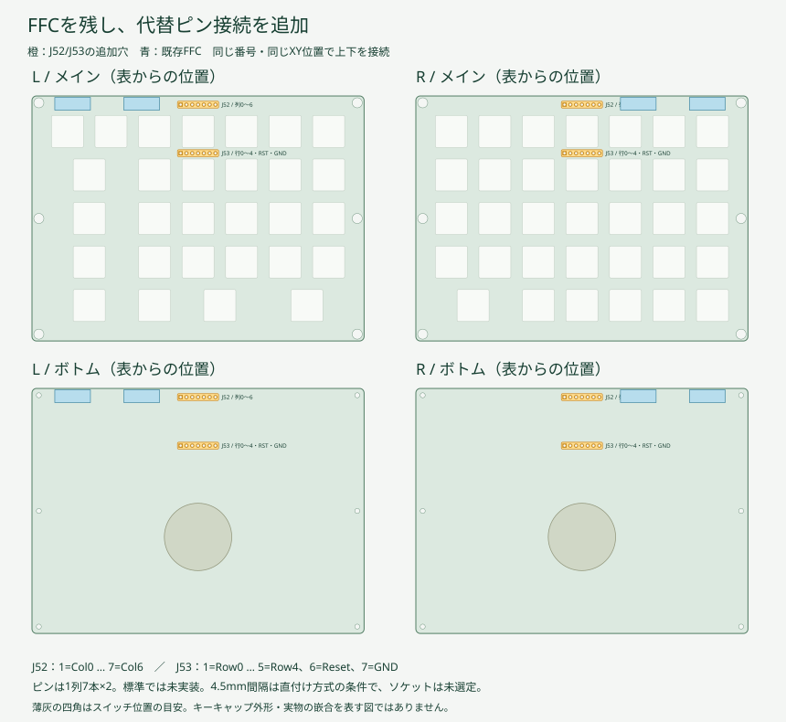
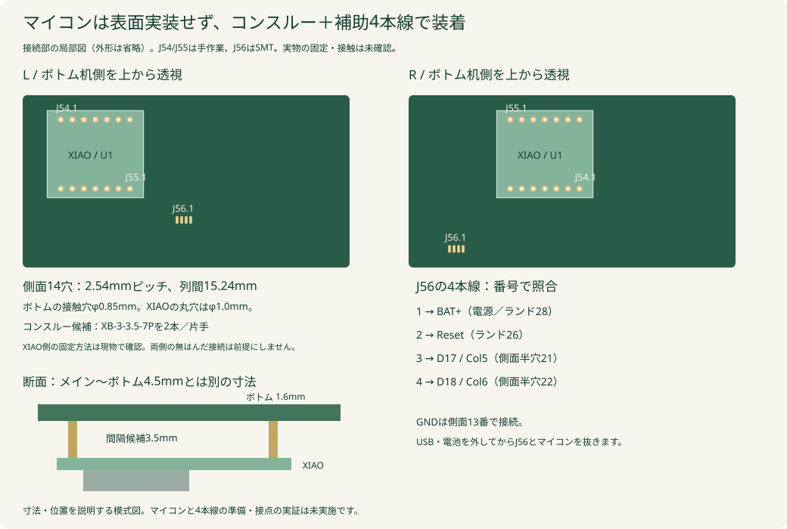
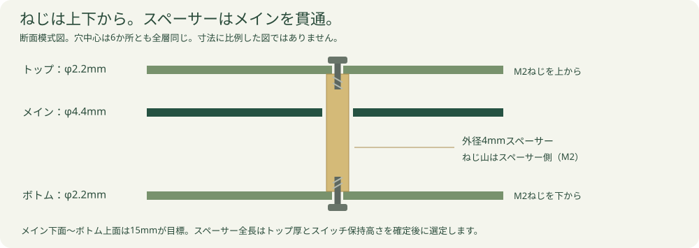

スイッチを支える
キー位置と開口を維持。固定穴はφ2.2mmのM2ねじ通し穴です。
XIAO nRF52840 Plus · CR2450 · USB DONGLE
左右29＋34キー。電池ケースを維持し、マイコンと電源回路を机側へ。
メインとボトムは、取り外せるFFCを基本に、代替の直付けピン接続にも対応します。
厚さは板厚1.6mm、トップ間隔3.4mm、足12mm、表示用キーキャップの条件。実物のキャップ・足の圧縮・部品公差で変わります。
01 / ON YOUR DESK
図のキーを押すと、入力の通り道を確認できます。これは使い方の図解で、実際のBLE通信試験ではありません。
キーをクリック／タップしてください。
受信ドングルは検証用にXIAO nRF52840 Plusをもう1枚使う構成。PCのUSB-AならA–Cアダプターまたは短いケーブルを使います。左右のUSBは給電用で、現在の子機ファームウェアはUSBキー入力を出しません。通信経路は給電中も左右→BLE→ドングル→USB HID→PCです。
ドングルなしのPC直接Bluetooth接続、左右間の有線データ通信は今回のファームウェアには含みません。会社でのUSBデータ接続方式は別途検討します。
02 / FROM THE ACTUAL CAD
キー位置と開口を維持。固定穴はφ2.2mmのM2ねじ通し穴です。
キー部品はB面。高さ1.35mmのリセットスイッチと、B面のFFCコネクタを使用します。信号線は0.5mm。代替ピンJ52/J53の穴も用意しています。
XIAOは机側へコンスルー＋補助4本線で装着。電源・電池ケースはB面、FFCは内側のF面です。
実際のKiCadデータから生成した上からの透視図。赤：F.Cu、青：B.Cu。B面の部品も透視して表示し、座標の左右は反転しません。電源経路とGNDは銅箔の接続検査で照合します。
机側から回転して部品を見る →CONNECTION OPTIONS / SAME PCB
12極・1mmピッチを2本／片手。メインn番→ボトム13−n番です。コネクタはSMT形状。ケーブルの接点面・長さ・曲げ半径と抜け止めは現物確認が残っています。
別々の1×7列を2本／片手。2.54mmピッチ、加工穴φ1.05mm。メインとボトムの同じ番号同士をまっすぐつなぎます。Pro Micro用の端子ではありません。

J52同士、J53同士を同じ番号で接続します。左右とも同じ対応です。FFCの番号対応とは異なります。
| メイン端子 | ボトム端子 | J52 | J53 |
|---|
ピンはDNP（初期状態では未実装）。使う場合は、ボトムF面側に樹脂部高さ2.5mm以下の長いピンを置き、メインは穴だけに通して両基板へ直付けする案です。端を切り揃え、部品・足・机へ当てません。4.5mmの隙間に合う、取り外せるピンソケットは未選定です。FFCかピンのどちらかを選んで組み立てます。
ピン経由とFFC経由をそれぞれ単独で、銅箔接続とキーマトリックスのモデル検査に通しています。実物の機械的な嵌合は未確認です。
MCU / SERVICEABLE ASSEMBLY
XIAO Plus本体をボトムへ表面実装する方式から、コンスルーJ54/J55＋補助4本線のJ56へ変更しました。追加の変換基板は使いません。基板間のJ50〜J53とは別の接続です。

候補MAC8 XB-3-3.5-7Pを2本／片手。ボトムの接触穴はφ0.85mm。XIAOのφ1mm穴への固定方法は現物確認が必要で、両側とも差すだけで使えるとは扱いません。抜き差し側は表面仕上げと仕上がり穴径φ0.85±0.05mmを製造側へ確認します。
J56はJST SH 4極。1=BAT+、2=Reset、3=D17/Col5、4=D18/Col6。XIAO側に短い配線を準備し、コネクタで接続します。GNDは側面端子13で共通。J56はMCU専用で、Qwiic等のI²C機器とは配列が異なります。D17/D18は側面の半穴、BAT/Resetは裏面の平面パッドです。
交換時はUSBと電池を外し、J56を抜いてからマイコンをまっすぐ外します。交換用XIAOにもピン固定と4本の配線準備が必要です。高さ3.5mmはボトム〜XIAOの間隔で、メイン〜ボトム4.5mmとは別。配線の候補長40mm・保持と取り回し、接点・穴公差は実物確認が残ります。
保守的な机側包絡8.5mmで検査します。電池ケース8.6mmと足12mmの条件を維持するため、全高の表示概算は約33.6mmです。取り付け方法の実証前なので完成品の厚さを保証する値ではありません。
03 / ASSEMBLY
メインB面にソケット・ダイオード・FFC・リセット。ボトムB面に電源・ケース・補助4極J56、F面にFFC。XIAO本体とJ54/J55のコンスルーは工場の実装対象から外し、後から手作業で取り付けます。
外周6か所。丸形OD4のM2スペーサー4mmと5mmを、厚0.5mm・OD6のM2ワッシャーを挟み、M2×5止めねじで連結します。メインはワッシャー上に乗り、上側スペーサーがφ4.4mm穴を通ります。基板間の隙間は4.5mmです。
FFCはJ50同士・J51同士。12極・1mmピッチ・接点厚0.3mm。候補長40mmを2本／片手。メーカーの「A/Bタイプ」だけで判断せず、露出接点の面と導通を確認します。コネクタ口は前端向きで、U字の折り返しが前端から約0.5〜1mm出る仮経路です。補強板部分を曲げず、実ケーブルで曲げ半径と長さを合わせます。代替ピンは上の対応表に従い、J52/J53を同番で直付けします。
下側M2×3、上側M2×4を候補とし、連結ねじと突き当たらないことを確認します。キーの足・FFC・支持部品を挟み込まず、2Uスタビライザーの方式とトップ開口を現物で合わせます。足は公称12mm程度・荷重時11mm以上を想定しています。
left／right／dongleをそれぞれ対応するXIAOへ書き込みます。初回は電池を外しUSB給電で確認。無線の結合・キー入力・USB抜き差しを確認した後、指定測定点で電源と逆流を測り、CR2450を装着します。


コネクタの向きが異なるため、メイン n番 → ボトム 13−n番。同じ番号同士の接続ではありません。NCは配線しない端子です。
| メイン端子 | ボトム端子 | J50 | J51 |
|---|
04 / POWER
USB接続時はVBUSでLM66100を無効化し、XIAO内部の電源回路から給電します。CR2450へ充電する設計ではありません。ダイオード・分離ICの接続、USBの定常状態と電池の負荷条件は検証記録に分けて掲載しています。
電池スイッチをOFFにしても、USB給電中のマイコンは動作します。ONのままでは、昇圧回路などの待機消費が電池側に残ります。USB常用時は電池スイッチをOFFにできます。USBを外して使う際は、それぞれの電池スイッチをONにします。
公称3.6Vは昇圧出力の設計値です。負荷変動時の最低電圧、XIAOの3.3V系、USB切替時の電圧降下、一次電池への逆流量は、モデルの仮定と実測を区別します。電池寿命は消費電流の実測前なので未確定です。
05 / EVIDENCE & LIMITS
実機はまだありません。CADの静的検査、理想化したスイッチ・銅箔モデル、実ファームウェアのコンパイル、電源シミュレーションは、それぞれ範囲が異なります。無線の電波・実物の消費電流・チャタリング・USB過渡応答を実機確認済みとは扱いません。
内側の候補位置では、既存配線やスイッチ穴との干渉がありました。「配線を切る必要があれば移さなくてよい」という条件に従い、6穴と外形を維持しました。基板の面積は増やしていません。
FFCの接点面・曲げ・抜け止めと長さ、スペーサーとねじの実物嵌合、2Uスタビライザー、足の圧縮、全BOMの在庫・CPL回転、コンスルーの接触穴公差・XIAO側固定・補助4本線の準備を確認してください。現在の資料は設計レビュー用で、量産の合格保証ではありません。
06 / COMPONENTS
部品表は左右のキーボード本体の数量です。受信ドングル用にXIAO nRF52840 Plusを別途1枚と、PCへつなぐUSB接続部材を用意します。
大量にあるソケットとダイオード、電源IC・受動部品はSMT形状です。電池ケースC7525448、FFCコネクタC5148307はJLCPCBのSMT登録を確認しています。全BOMの在庫と実装可否は発注時に照合します。電池・キャップ・キースイッチの差し込み・ねじ固定は別工程です。
左右各5枚、合計30枚を頼む場合：マイコンの工場実装は0個へ変更しました。必要なのは左右1セット。1枚製造対応業者への見積もりと、JLCPCBで実装だけ各2枚に絞る案を比較します。製造枚数・実装枚数と問い合わせ文を見る →
このページは設計スナップショットの解説資料です。部品の適合・スペーサー全長・実動作には確認が残っています。